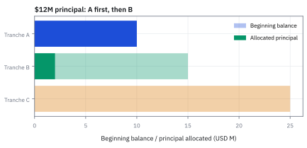
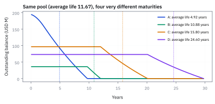
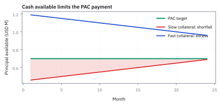
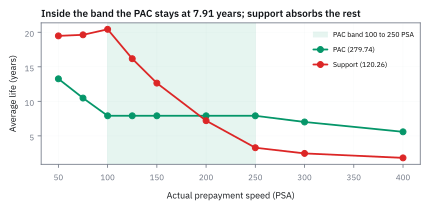

22.3 CMO Tranche Waterfalls
CMO เขียนกติกาว่าเงินต้นแต่ละดอลลาร์ของ pool ไปถึงผู้ถือชั้นไหนก่อน จึงสร้างของอายุสั้นและอายุยาวจาก pool เดียวได้ แต่ความไม่แน่นอนเรื่องเวลาไม่ได้หายไป มันแค่ย้ายที่
ผู้จัดตั้งแบ่ง pass-through \$400 ล้านของ 22.2 เป็นสี่ชั้น A, B, C, D (194.5, 36, 96.5 และ 73 ล้าน) ขายชั้น A ให้กองทุนตลาดเงินในฐานะของอายุราว 5 ปี และขายชั้น D ให้บริษัทประกันในฐานะของอายุราว 25 ปี แล้วบอกว่า “แบ่งชั้นแล้ว ทุกคนได้อายุที่ต้องการ ความเสี่ยงเรื่องเวลาจัดการเรียบร้อย” ถ้าอัตราดอกเบี้ยลงจนผู้กู้คืนก่อนกำหนดที่ 200 PSA แทน 100 PSA อายุของสองชั้นนี้เป็นเท่าไร?
ลองตอบก่อนเปิดเฉลย
ที่ 100 PSA ชั้น A มี average life 4.92 ปี และชั้น D 24.60 ปีตามที่ขาย แต่ที่ 200 PSA ชั้น A เหลือ 3.06 ปี และชั้น D เหลือ 18.12 ปี บริษัทประกันเสียอายุไป 6.48 ปี ความเสี่ยงไม่ได้หาย ค่าเฉลี่ยถ่วงของสี่ชั้นเท่ากับอายุของ pool ทุกความเร็ว (11.67 ปีที่ 100 PSA และ 7.69 ปีที่ 200 PSA) ขั้นที่ 4 และ 5 พิสูจน์และคิดตัวเลขนี้
สิ่งที่เราจะสร้าง
22.2 เดินเงินของ pool ทีละเดือนแล้วได้เงินต้นรายเดือน $Q_t$ ซึ่งเร็วหรือช้าตามความเร็วการคืนก่อนกำหนด pass-through แบ่ง $Q_t$ ให้ทุกคนตามสัดส่วน ผู้ถือทุกคนจึงได้อายุเดียวกัน collateralized mortgage obligation (CMO) เปลี่ยนแค่กติกาการแบ่ง ไม่ได้เปลี่ยน $Q_t$
เราจะเขียนกติกาแบบเรียงคิว (sequential) แล้วเดินเงินจริงของไฟล์ MBS_Structure ผ่านสี่ชั้น หา average life ของแต่ละชั้น พิสูจน์ว่าค่าเฉลี่ยถ่วงของทุกชั้นต้องเท่ากับของ pool ดูว่าแต่ละชั้นขยับเท่าไรเมื่อความเร็วเปลี่ยน สร้างชั้น PAC ที่ได้เงินต้นตามตารางภายในช่วงความเร็วที่กำหนด โดยมีชั้น support รับส่วนที่เหลือ แล้วแยกดอกเบี้ยของหนึ่งชั้นเป็น floater กับ inverse floater
ศัพท์ที่ใช้ในหัวข้อนี้
- Collateralized mortgage obligation (CMO)
- ตราสารหลายชั้นที่มี pool สินเชื่อบ้าน (หรือ pass-through) เป็นหลักประกัน แต่ละชั้นได้เงินตามกติกาของตัวเอง ใช้สร้างอายุและความเสี่ยงหลายแบบจากเงินชุดเดียว
- Tranche
- ชั้นหนึ่งของ CMO มียอดหนี้ อัตราดอกเบี้ย และลำดับการได้เงินต้นของตัวเอง คำนี้มาจากภาษาฝรั่งเศสแปลว่าชิ้น
- Waterfall
- ชุดกติกาที่บอกว่าเงินที่ pool เก็บได้ในแต่ละเดือนไหลไปชั้นไหนก่อนหลัง เหมือนน้ำที่เติมอ่างบนจนเต็มแล้วล้นลงอ่างล่าง ใช้ตัดสินทุกดอลลาร์โดยไม่ต้องตีความ
- Principal window
- ช่วงเดือนที่ชั้นหนึ่งได้เงินต้น ตั้งแต่ดอลลาร์แรกจนหนี้ของชั้นหมด ใช้บอกผู้ซื้อว่าเงินต้นจะกลับมาในช่วงไหน
- PAC และ support
- Planned amortization class คือชั้นที่ได้เงินต้นตามตารางที่ประกาศไว้ ตราบใดที่ความเร็วอยู่ในช่วงที่ออกแบบ (PSA band) ชั้น support (หรือ companion) รับเงินต้นส่วนเกินหรือรอเมื่อเงินขาด จึงรับความผันผวนแทน PAC
- Floater และ inverse floater
- สองชิ้นที่ตัดจากชั้นดอกเบี้ยคงที่ชั้นเดียว floater ได้ดอกเบี้ยตามอัตราอ้างอิงบวกส่วนเพิ่ม inverse floater ได้ดอกเบี้ยที่ลดลงเมื่ออัตราอ้างอิงขึ้น รวมกันแล้วเท่ากับดอกเบี้ยคงที่เดิมพอดี
- Accrual (Z) tranche
- ชั้นที่ไม่ได้รับดอกเบี้ยเป็นเงินสด ดอกเบี้ยถูกทบเข้าเป็นหนี้ของชั้น เงินสดที่ประหยัดไปถูกใช้จ่ายเงินต้นชั้นหน้าเร็วขึ้น ใช้ทำให้ชั้นหน้าสั้นลงและชั้นนี้ยาวขึ้น
สัญลักษณ์และหน่วย
| สัญลักษณ์ | ความหมาย | หน่วย |
|---|---|---|
| $Q_t$ | เงินต้นที่ pool เก็บได้ในเดือน $t$ (ตามตารางบวกคืนก่อนกำหนด) | ล้าน \$ ต่อเดือน |
| $B^k_t,\ B^k_0$ | หนี้ของชั้น $k$ หลังเดือน $t$ และตอนเริ่ม | ล้าน \$ |
| $X^k_t$ | เงินต้นที่ชั้น $k$ ได้ในเดือน $t$ | ล้าน \$ ต่อเดือน |
| $c_k,\ I^k_t$ | อัตราดอกเบี้ยของชั้น $k$ และดอกเบี้ยที่ได้ในเดือน $t$ | สัดส่วนต่อปี, ล้าน \$ |
| $\mathrm{AL}_k$ | average life ของชั้น $k$ | ปี |
| $S_t$ | ตารางเงินต้นของ PAC ในเดือน $t$ | ล้าน \$ ต่อเดือน |
| $L,\ m$ | อัตราอ้างอิงลอยตัว และส่วนเพิ่มของ floater | สัดส่วนต่อปี |
| $g,\ K$ | ตัวทด (leverage) และอัตราตั้งต้นของ inverse floater | เท่า, สัดส่วนต่อปี |
ขั้นที่ 1 — กติกาเรียงคิว และเงินเดือนแรก
กติกาแบบเรียงคิวมีสองข้อ ดอกเบี้ย: ทุกชั้นได้ดอกเบี้ยจากหนี้ต้นเดือนของตัวเอง เงินต้น: เงินต้นทั้งเดือนไปชั้น A จนหนี้ของ A หมด แล้วจึงไหลไป B, C และ D ตามลำดับ ตัวเลือกค่าน้อยในแต่ละบรรทัดกันไม่ให้จ่ายเกินหนี้ของชั้นนั้น และไม่ให้จ่ายเกินเงินที่ยังเหลือ
โจทย์ให้อะไรมาบ้าง: pool ของไฟล์ที่ 100 PSA เดือนแรกเก็บเงินต้นได้ $Q_1=0.5350$ ล้าน ทุกชั้นได้ดอกเบี้ย 7.50% ต่อปี หนี้ตั้งต้น 194.5, 36, 96.5 และ 73 ล้าน
คำตอบ: เงินต้น \$0.5350 ล้านไปชั้น A ทั้งหมด หนี้ของ A ลดเป็น \$193.965 ล้าน ชั้นอื่นได้เงินต้นศูนย์ แต่ทุกชั้นได้ดอกเบี้ยตามหนี้ของตัวเอง: A \$1.2156 ล้าน B \$0.2250 ล้าน C \$0.6031 ล้าน และ D \$0.4563 ล้าน
ตรวจเองใน 10 วินาที: ดอกเบี้ยสี่ชั้นรวมกัน $1.2156+0.2250+0.6031+0.4563=2.5000$ เท่ากับดอกเบี้ยที่ pass-through จ่ายในเดือนแรกพอดี และเงินต้นที่แจกรวมกันเท่ากับ $Q_1$ ไม่มีดอลลาร์ไหนเกิดขึ้นใหม่หรือหายไป
ขั้นที่ 2 — เดินครบ 357 เดือน: ใครได้เงินต้นช่วงไหน
ใช้กติกาของขั้นที่ 1 ซ้ำทุกเดือนกับ $Q_t$ ทั้ง 357 เดือนจาก 22.2 หนี้ของแต่ละชั้นลดลงตามเงินต้นที่ได้ ขั้นนี้ดูว่าแต่ละชั้นได้เงินต้นช่วงเดือนไหน
ชั้น A ได้เงินต้นทุกเดือนตั้งแต่เดือนแรก และหมดในเดือนที่ 117 (ปีที่ 9.75) เดือนนั้นเงินต้นส่วนที่เกินหนี้ที่เหลือของ A ไหลต่อไป B ทันที จึงมีสองชั้นได้เงินในเดือนเดียวกัน ชั้น D รอ 20 ปีกว่าจะได้เงินต้นดอลลาร์แรก (เดือนที่ 242) แต่ได้ดอกเบี้ยทุกเดือนตลอดเวลาที่รอ
Figure 22.3a — เงินต้นทั้งเดือนไปทีละชั้น

pool \$400 ล้านของไฟล์ที่ 100 PSA แกนนอนคือปี แกนตั้งคือเงินต้นต่อเดือนเป็นล้านดอลลาร์ ความสูงของพื้นที่คือ $Q_t$ ของทั้ง pool สีบอกว่าเดือนนั้นชั้นไหนได้: A (194.5) ถึงปีที่ 9.75 แล้ว B (36.0) C (96.5) และ D (73.0) ต่อคิว ความสูงสูงสุดอยู่ที่เดือนที่ 27 (ปีที่ 2.25 อายุสินเชื่อ 30 เดือน) ตอนที่ความเร็วเพิ่งถึง 6% และหนี้ยังมาก หลังจากนั้นเงินต้นต่อเดือนลดลงเพราะ pool หดลง
ขั้นที่ 3 — average life ของแต่ละชั้น
ใช้นิยามเดียวกับขั้นที่ 4 ของ 22.2 แต่ใช้เงินต้นของชั้นนั้นเป็นน้ำหนัก ตัวหารคือหนี้ตั้งต้นของชั้น เพราะเงินต้นทุกดอลลาร์ของชั้นต้องกลับมาครบ
pool เดียวกันให้ของสี่อายุ จาก 4.92 ถึง 24.60 ปี ตัวเลขทั้งห้าตรงกับไฟล์ Excel ของคอร์สทุกหลักที่แสดง ชั้น A สั้นเพราะได้เงินต้นทุกเดือนตั้งแต่แรก ชั้น D ยาวเพราะต้องรอให้สามชั้นหน้าได้คืนครบก่อน
Figure 22.3b — pool เดียว แต่ได้สี่อายุ

หนี้คงค้างของแต่ละชั้นตามเวลา (ล้านดอลลาร์) ที่ 100 PSA เส้นประแนวตั้งสีเดียวกันคือ average life 4.92, 10.88, 15.80 และ 24.60 ปี ตามป้ายในรูป หัวรูปบอกว่า pool ทั้งก้อนมี 11.67 ปี หนี้ของ D คงที่ 73 ล้านจนถึงปีที่ 20.17 แล้วจึงเริ่มลด
ขั้นที่ 4 — ทำไมค่าเฉลี่ยของทุกชั้นต้องเท่ากับของ pool
ผู้จัดตั้งอาจพูดว่าการแบ่งชั้น “ทำให้เงินกลับเร็วขึ้น” ขั้นนี้แสดงว่าเป็นไปไม่ได้ ถ้าถ่วงอายุของแต่ละชั้นด้วยขนาดของชั้น จะได้อายุของ pool เสมอ ไม่ว่ากติกาการแบ่งจะเป็นแบบไหน
บรรทัดแรกแทนนิยามของขั้นที่ 3 แล้ว $B^k_0$ ตัดกัน บรรทัดที่สองสลับลำดับการบวก จากบวกทีละชั้นเป็นบวกทีละเดือน บรรทัดที่สามคือจุดสำคัญ: waterfall แจกเงินต้นของเดือนหนึ่งให้ชั้นต่าง ๆ รวมกันได้ $Q_t$ พอดี ไม่มากไม่น้อย ข้อนี้คือทั้งหมดที่ต้องใช้
ตัวเลข: $(194.5\times4.918+36\times10.877+96.5\times15.798+73\times24.599)/400=11.671$ ตรงกับ pool การแบ่งชั้นจึงเป็นการแลกอายุระหว่างผู้ถือ ชั้น A ได้อายุสั้นเพราะชั้น D รับอายุยาวแทน
ขั้นที่ 5 — เมื่อความเร็วเปลี่ยน ทุกชั้นขยับ
เดินเงินชุดใหม่ด้วยความเร็วอื่นแล้วใช้กติกาเดิม นี่คือคำตอบของโจทย์: แต่ละชั้นได้ความเสี่ยงเรื่องเวลาไปคนละขนาด
โจทย์ให้อะไรมาบ้าง: pool และกติกาเดียวกับขั้นที่ 1 ความเร็ว 50, 100, 200 และ 300 PSA ตามขั้นที่ 3 ของ 22.2
| ความเร็ว | A | B | C | D | pool |
|---|---|---|---|---|---|
| 50 PSA | 7.49 | 15.99 | 21.03 | 27.25 | 15.13 |
| 100 PSA | 4.92 | 10.88 | 15.80 | 24.60 | 11.67 |
| 200 PSA | 3.06 | 6.44 | 9.61 | 18.12 | 7.69 |
| 300 PSA | 2.34 | 4.65 | 6.83 | 13.37 | 5.64 |
คำตอบ: จาก 100 เป็น 200 PSA ชั้น A สั้นลง 1.86 ปี แต่ชั้น D สั้นลง 6.48 ปี ในทางกลับกัน ถ้าช้าลงเป็น 50 PSA ชั้น A ยืดเป็น 7.49 ปี กองทุนตลาดเงินที่อยากได้ของ 5 ปีก็ไม่ได้ความแน่นอนเช่นกัน ทุกแถวของตาราง ค่าเฉลี่ยถ่วงด้วยขนาด $\overline{\mathrm{AL}}$ เท่ากับช่องของ pool ตามขั้นที่ 4
ตรวจเองใน 10 วินาที: แถว 200 PSA: $(194.5\times3.06+36\times6.44+96.5\times9.61+73\times18.12)/400$ ได้ 7.69 เท่าช่องของ pool
ขั้นที่ 6 — PAC: สร้างตารางที่ pool จ่ายได้ทั้งสองขอบของช่วงความเร็ว
ถ้าผู้ซื้ออยากได้เงินต้นตามตารางจริง ๆ ต้องมีคนอื่นรับความผันผวนแทน กติกา PAC ทำแบบนี้: เลือกช่วงความเร็วที่ออกแบบไว้ (ในตัวอย่างนี้ 100 ถึง 250 PSA) แล้วตั้งตารางของ PAC เป็นเงินต้นที่ pool จ่ายได้แน่ ๆ ไม่ว่าความเร็วจะอยู่ที่ขอบไหน
ช่วง 109 เดือนแรก pool ที่ 100 PSA จ่ายเงินต้นน้อยกว่า ตั้งแต่เดือนที่ 110 pool ที่ 250 PSA จ่ายน้อยกว่า เพราะมันหดเร็วจนเหลือหนี้น้อย ตารางจึงเป็นขอบล่างของทั้งสอง รวมได้ PAC \$279.74 ล้าน ที่เหลือ \$120.26 ล้านเป็น support
สองบรรทัดล่างคือกติกาที่ใช้ในหน้านี้และในรูป: PAC ได้ไม่เกินตารางของเดือนนั้น ส่วนเกินไป support และเมื่อ support หมดแล้ว เงินต้นทั้งหมดไป PAC กติกานี้ไม่ตามเก็บส่วนที่ PAC ได้ขาดจากตารางในเดือนก่อน
Figure 22.3c — ตาราง PAC คือขอบล่างของสองความเร็ว

แกนนอนคือปี 0 ถึง 20 แกนตั้งคือเงินต้นต่อเดือนเป็นล้านดอลลาร์ เส้นน้ำเงินคือ pool ที่ 100 PSA เส้นส้มคือ 250 PSA เส้นประแดงคือ 50 PSA เส้นเขียวหนาคือตาราง PAC $\min(Q^{100}_t,Q^{250}_t)$ รวม 279.74 ตามป้าย เส้น 50 PSA อยู่ต่ำกว่าตารางในช่วงต้น (ห้าปีแรกขาดรวม \$39.79 ล้าน) ความเร็วนอกช่วงจึงจ่ายตารางไม่ได้
ขั้นที่ 7 — PAC นิ่งในช่วง support แกว่งแทน
โจทย์ให้อะไรมาบ้าง: PAC \$279.74 ล้าน support \$120.26 ล้าน ตามขั้นที่ 6 เดินเงินที่ความเร็วจริง 50 ถึง 400 PSA แล้วหา average life ของทั้งสองชั้น
คำตอบ: ทุกความเร็วตั้งแต่ 100 ถึง 250 PSA PAC ได้เงินตามตารางทุกเดือนพอดี average life จึงเป็น 7.91 ปีทุกจุด ส่วน support แกว่งจาก 20.43 ปีถึง 3.28 ปี นอกช่วง PAC ก็ขยับ ที่ 50 PSA ยืดเป็น 13.26 ปี และที่ 400 PSA support หมดเร็วจน PAC หดเหลือ 5.59 ปี
ตรวจเองใน 10 วินาที: ที่ 100 PSA ค่าเฉลี่ยถ่วง $(279.74\times7.907+120.26\times20.427)/400=11.67$ เท่ากับ pool ตามขั้นที่ 4 ความนิ่งของ PAC จ่ายด้วยความไม่นิ่งของ support
Figure 22.3d — ในช่วง PAC นิ่งที่ 7.91 ปี

แกนนอนคือความเร็วจริง 50, 75, 100, 125, 150, 200, 250, 300 และ 400 PSA แกนตั้งคือ average life เป็นปี แถบเขียวคือช่วง 100 ถึง 250 PSA เส้นเขียวคือ PAC (279.74) แบนที่ 7.91 ตลอดแถบ เส้นแดงคือ support (120.26) ซึ่งลดจาก 20.43 ถึง 3.28 ในแถบ ใช้กติกาของขั้นที่ 6 ที่ไม่ตามเก็บส่วนขาด
ขั้นที่ 8 — แยกดอกเบี้ยคงที่เป็น floater กับ inverse floater
CMO แบ่งได้ทั้งเงินต้นและดอกเบี้ย ขั้นนี้ตัดชั้น C (\$96.5 ล้าน ดอกเบี้ยคงที่ 7.50%) เป็น floater 75% กับ inverse floater 25% ข้อจำกัดเดียวคือดอกเบี้ยที่จ่ายสองชิ้นรวมกันต้องเท่ากับดอกเบี้ยที่ชั้น C ได้ ทุกเดือน ทุกระดับของอัตราอ้างอิง $L$
แทน $c_f$ แล้วแก้หา $c_i$ ได้เส้นตรงที่ลดลงตาม $L$ ด้วยความชัน $g$ เท่ากับขนาดของ floater หารด้วยขนาดของ inverse floater ถ้า $L=5\%$ floater ได้ 5.5% และ inverse floater ได้ $28.5\%-3(5\%)=13.5\%$ ตรวจ: $0.75(5.5\%)+0.25(13.5\%)=7.5\%$ เดือนแรกได้ \$0.3317 ล้าน และ \$0.2714 ล้าน รวม \$0.6031 ล้านเท่ากับดอกเบี้ยชั้น C
ดอกเบี้ยติดลบไม่ได้ $c_i$ จึงเป็นศูนย์เมื่อ $L$ ถึง $K/g=9.5\%$ และ floater ต้องมีเพดานที่ 10% เพราะเงินดอกเบี้ยทั้งหมดของชั้น C พอจ่ายแค่นั้น ผู้ถือ inverse floater ได้ความไวต่ออัตราสามเท่าของดอกเบี้ย และยังไวต่อความเร็วการคืนก่อนเหมือนชั้น C เดิม
คำถามที่ควรถามออกมาดัง ๆ
ใครจะซื้อชั้น support? ผู้ที่ได้ผลตอบแทนสูงกว่าเป็นค่าตอบแทน และเชื่อว่าคาดความเร็วได้ดีกว่าตลาด ชั้น support เป็นที่ที่ความผันผวนทั้งหมดของ pool ไปกองรวม มันจึงมี convexity ติดลบหนักกว่า pass-through เดิม
ชั้น D ปลอดภัยที่สุดไหมเพราะอยู่ท้ายคิว? ในเรื่องเวลา D กลับเสี่ยงเป็นเงินปีมากที่สุด (ขยับ 6.48 ปีในขั้นที่ 5) ส่วนเรื่องการผิดนัด pool นี้เป็นของ agency จึงไม่มีใครขาดทุนเงินต้น ลำดับเงินต้นของ CMO จึงไม่ใช่ลำดับการรับขาดทุน ซึ่งเป็นกติกาอีกแบบที่ 22.4 จะสร้าง
ความผิดที่ให้คำตอบผิดแบบเงียบ ๆ
แบ่งเงินต้นตามสัดส่วน: ถ้าแบ่งแบบ pass-through ชั้น A จะได้ $0.535(194.5/400)=0.260$ ล้านในเดือนแรก แต่กติกาเรียงคิวให้ A ได้ทั้ง 0.535 ล้าน ตารางเงินของทุกชั้นผิดตั้งแต่เดือนแรก
คิดดอกเบี้ยจากหนี้หลังจ่ายเงินต้น: ดอกเบี้ยของ A เดือนแรกคือ $194.5(0.075/12)=1.2156$ ล้าน ไม่ใช่ $193.965(0.075/12)=1.2123$ ล้าน ผลรวมสี่ชั้นจะไม่เท่ากับดอกเบี้ยของ pool
เชื่อว่าการแบ่งชั้นลดความเสี่ยงรวม: ค่าเฉลี่ยถ่วงของอายุเท่ากับของ pool เสมอ (11.67 ปีที่ 100 PSA) ความเสี่ยงที่ชั้นหนึ่งไม่ได้รับต้องไปอยู่ที่ชั้นอื่น
เชื่อ PAC นอกช่วงที่ออกแบบ: ที่ 50 PSA PAC ยืดจาก 7.91 เป็น 13.26 ปี และช่วงที่ปลอดภัยจริงจะแคบลงเรื่อย ๆ เมื่อ support ถูกจ่ายคืนไปก่อน
ใช้ทำอะไรบนโต๊ะจริง
desk ที่ตั้งราคา CMO เดินเงินของ pool ด้วยหลายความเร็วหรือหลายเส้นทางอัตรา ส่งผ่าน waterfall ตามเอกสารของ deal ทีละบรรทัด แล้วคิดลดเงินของแต่ละชั้นแยกกัน รายงานที่ขาดไม่ได้คือ average life และ principal window ของทุกชั้นที่หลายความเร็ว เหมือนตารางของขั้นที่ 5 และสำหรับ PAC คือช่วงความเร็วที่ยังรักษาตารางได้ในวันนี้ ไม่ใช่วันออก
สามโจทย์ตรวจความเข้าใจ
1. เดือนที่ 2 pool เก็บเงินต้นได้ \$0.6034 ล้าน หนี้ของชั้น A หลังเดือนที่ 2 เป็นเท่าไร และชั้น B ได้เงินต้นเท่าไร?
เฉลย
หนี้ของ A ต้นเดือนคือ 193.9650 ล้าน มากกว่า 0.6034 เงินต้นทั้งหมดจึงไป A หนี้เหลือ $193.9650-0.6034=193.3616$ ล้าน ชั้น B ได้ศูนย์ ดอกเบี้ยของ A เดือนนี้คือ $193.9650(0.075/12)=1.2123$ ล้าน
2. ใช้แถว 50 PSA ของขั้นที่ 5 ตรวจว่าค่าเฉลี่ยถ่วงของสี่ชั้นเท่ากับอายุของ pool
เฉลย
$(194.5\times7.49+36\times15.99+96.5\times21.03+73\times27.25)/400=(1{,}456.81+575.64+2{,}029.40+1{,}989.25)/400=15.13$ เท่ากับช่องของ pool ตัวเลขในตารางปัดสองตำแหน่ง ผลรวมจึงอาจคลาดที่หลักสุดท้าย
3. inverse floater ของขั้นที่ 8 ได้ดอกเบี้ยเท่าไรเมื่อ $L=8\%$ และเมื่อ $L=10\%$?
เฉลย
$L=8\%$: $28.5\%-3(8\%)=4.5\%$ floater ได้ 8.5% ตรวจ $0.75(8.5\%)+0.25(4.5\%)=7.5\%$ ส่วน $L=10\%$ สูตรให้ $-1.5\%$ จึงเป็นศูนย์ และ floater อยากได้ 10.5% แต่เงินพอจ่ายแค่ $7.5\%/0.75=10\%$ จึงชนเพดาน
คำนวณซ้ำด้วย JavaScript
โค้ดนี้สร้างเงินต้นรายเดือนของ pool แบบ 22.2 ส่งผ่าน waterfall แบบเรียงคิว คิด average life ของแต่ละชั้นที่หลายความเร็ว สร้างตาราง PAC และวัดทั้ง PAC กับ support แล้วแยกดอกเบี้ยเป็น floater กับ inverse floater พิมพ์ตัวเลขหลักออกมาหนึ่งบรรทัด
const {min, max} = Math;
function num(name, x) {
if (typeof x !== 'number' || !Number.isFinite(x)) throw new TypeError(`${name} must be a finite number`);
return x;
}
// Monthly principal Q_t of the course pool ($400M, 8.125%, 3 months seasoned) at k times PSA.
function poolPrincipal(k, B = 400, wac = 0.08125, season = 3, N = 360) {
if (!(num('k', k) > 0 && k * 0.06 < 1)) throw new RangeError('k must be positive and keep CPR below 100%');
const r = wac / 12, Q = [];
for (let t = 1; t <= N - season && B > 1e-12; t++) {
const A = B * r / (1 - (1 + r) ** -(N - season - t + 1)), P = A - B * r;
const smm = 1 - (1 - k * min(0.002 * (t + season), 0.06)) ** (1 / 12), PP = (B - P) * smm;
Q.push(P + PP); B -= P + PP;
}
return Q;
}
// Sequential waterfall: each month's principal fills tranche 1, then 2, ...
function sequential(Q, sizes) {
if (!Array.isArray(sizes) || sizes.some(s => !(num('size', s) > 0))) throw new RangeError('tranche sizes must be positive numbers');
const bal = sizes.slice(), pay = sizes.map(() => []);
for (const q0 of Q) {
let q = q0;
for (let i = 0; i < bal.length; i++) { const x = min(q, bal[i]); pay[i].push(x); bal[i] -= x; q -= x; }
}
return pay;
}
function averageLife(pay) {
let tw = 0, w = 0;
pay.forEach((x, i) => { tw += (i + 1) * x; w += x; });
if (!(w > 0)) throw new RangeError('no principal paid');
return tw / (12 * w);
}
// PAC takes min(Q, schedule, balance) while support lives; support takes the rest; no catch-up of shortfalls.
function pacSplit(Q, S) {
let bp = S.reduce((a, b) => a + b, 0), bs = 400 - bp;
if (!(bs >= 0)) throw new RangeError('PAC schedule exceeds the pool');
const pp = [], ps = [];
Q.forEach((q0, t) => {
let q = q0;
let a = bs > 1e-12 ? min(q, S[t] || 0, bp) : min(q, bp);
bp -= a; q -= a;
const s = min(q, bs); bs -= s; q -= s;
if (q > 1e-12) { const x = min(q, bp); a += x; bp -= x; }
pp.push(a); ps.push(s);
});
return {pac: averageLife(pp), support: averageLife(ps)};
}
// Floater L + m and inverse floater K - gL cut from a fixed coupon c; inverse coupon floored at zero.
function floaterSplit(B, c, share, m, L) {
if (!(num('share', share) > 0 && share < 1)) throw new RangeError('floater share must be strictly between 0 and 1');
const Bf = share * B, Bi = B - Bf, g = Bf / Bi, K = (B * c - Bf * num('m', m)) / Bi;
const ci = max(0, K - g * num('L', L)), cf = min(L + m, (B * c - Bi * ci) / Bf);
return {g, K, cap: K / g, cf, ci};
}
const sizes = [194.5, 36, 96.5, 73];
const speeds = [0.5, 1, 2, 3];
const table = speeds.map(k => {
const Q = poolPrincipal(k), pay = sequential(Q, sizes);
return {psa: 100 * k, tranches: pay.map(averageLife), pool: averageLife(Q)};
});
const Q100 = poolPrincipal(1), Q250 = poolPrincipal(2.5);
const S = Q100.map((q, t) => min(q, Q250[t] || 0));
const pay100 = sequential(Q100, sizes);
console.log(JSON.stringify({
Q1: Q100[0], Q2: Q100[1], interest1: sizes.map(b => b * 0.075 / 12),
windows: pay100.map(p => [p.findIndex(x => x > 1e-12) + 1, p.length - [...p].reverse().findIndex(x => x > 1e-12)]),
table, scheduleTotal: S.reduce((a, b) => a + b, 0),
pac: [0.5, 1, 2.5, 4].map(k => pacSplit(poolPrincipal(k), S)),
floater5: floaterSplit(96.5, 0.075, 0.75, 0.005, 0.05), floater8: floaterSplit(96.5, 0.075, 0.75, 0.005, 0.08),
floater10: floaterSplit(96.5, 0.075, 0.75, 0.005, 0.10)
}));ที่มาที่ไป
ต้นทศวรรษ 1980 ผู้ลงทุนสถาบันจำนวนมากไม่อยากถือ pass-through เพราะไม่รู้ว่าเงินต้นจะกลับเมื่อไร CMO ตัวแรกออกโดย Freddie Mac ในปี 1983 โดยมี First Boston และ Salomon Brothers เป็นผู้จัดตั้ง ใช้กติกาเรียงคิวแบบขั้นที่ 1 ต่อมาจึงเกิดชั้น PAC ชั้น Z และ floater กับ inverse floater เพื่อสร้างของให้ตรงกับผู้ซื้อแต่ละกลุ่มมากขึ้น
ข้อจำกัด: วิธีนี้สมมติอะไร และของจริงเป็นอย่างไร
| สมมติอะไร | ของจริง | ผลเวลาใช้งาน |
|---|---|---|
| ความเร็วคงที่ตลอดอายุ | ความเร็วเปลี่ยนตามอัตราและตามเส้นทางที่ผ่านมา | ตาราง AL ตามความเร็วคงที่เป็นแค่ภาพหยาบ ต้องใช้หลายเส้นทางอัตรา |
| PAC ไม่ตามเก็บส่วนที่ขาด | สัญญาส่วนใหญ่จ่าย PAC จนถึงยอดตามแผนก่อน support | ที่ 50 PSA ถ้าตามเก็บ PAC จะได้ 10.76 ปี ไม่ใช่ 13.26 ปี ต้องอ่านกติกาของ deal |
| ทุกชั้นได้ 7.50% และ pool ไม่ผิดนัด | แต่ละชั้นมีอัตราของตัวเอง และ pool เอกชนมีการขาดทุน | ต้องกระทบดอกเบี้ยรวมกับของ pool ทุกเดือน และเพิ่มกติกาการรับขาดทุนแบบ 22.4 |
สิ่งที่ควรตอบได้หลังอ่าน
- กติกาเรียงคิวส่งเงินต้นทั้งเดือนให้ชั้นหน้าสุดที่ยังมีหนี้ ส่วนดอกเบี้ยจ่ายทุกชั้นตามหนี้ของตัวเอง
- pool 11.67 ปีกลายเป็นชั้น 4.92, 10.88, 15.80 และ 24.60 ปี และค่าเฉลี่ยถ่วงด้วยขนาดเท่ากับของ pool เสมอ เพราะเงินต้นที่แจกรวมกันเท่ากับ $Q_t$
- เมื่อความเร็วเปลี่ยน ทุกชั้นขยับ: จาก 100 เป็น 200 PSA ชั้น A สั้นลง 1.86 ปี ชั้น D สั้นลง 6.48 ปี
- PAC ได้ 7.91 ปีทุกความเร็วใน 100 ถึง 250 PSA เพราะ support รับความผันผวนแทน (20.43 ถึง 3.28 ปี) และนอกช่วง PAC ก็ขยับ
- floater กับ inverse floater แบ่งดอกเบี้ยคงที่ได้ด้วยเส้นตรง $K-gL$ (28.5% − 3L) ที่ต้องมีพื้นศูนย์และเพดาน
22.4 เปลี่ยนคำถามจากเวลาเป็นการขาดทุน: เมื่อลูกหนี้ผิดนัด ขาดทุนไหลลงชั้นไหนก่อน และทำไมความเกาะกันของการผิดนัดจึงตัดสินราคาของแต่ละชั้น